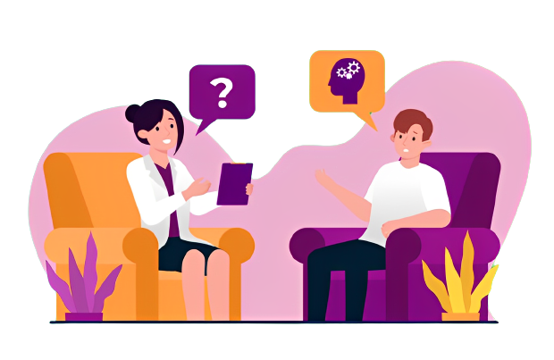

Cherunnisa Salsabila prodi Teknik Informatika PHB
Kesehatan mental adalah bagian penting dari kesejahteraan kita. Ini memengaruhi cara kita berpikir, merasa, dan berperilaku sehari-hari. Jaga kesehatan mental Anda sama pentingnya dengan menjaga kesehatan fisik.
"Kesehatan mental adalah hal yang sama pentingnya dengan kesehatan fisik. Itu adalah bagian dari kita yang tidak terlihat, tetapi memiliki dampak besar pada kehidupan kita." - Chaerunnis Salsabila
Temukan lebih banyak informasi tentang kesehatan mental di situs web Mental Health Indonesia.
